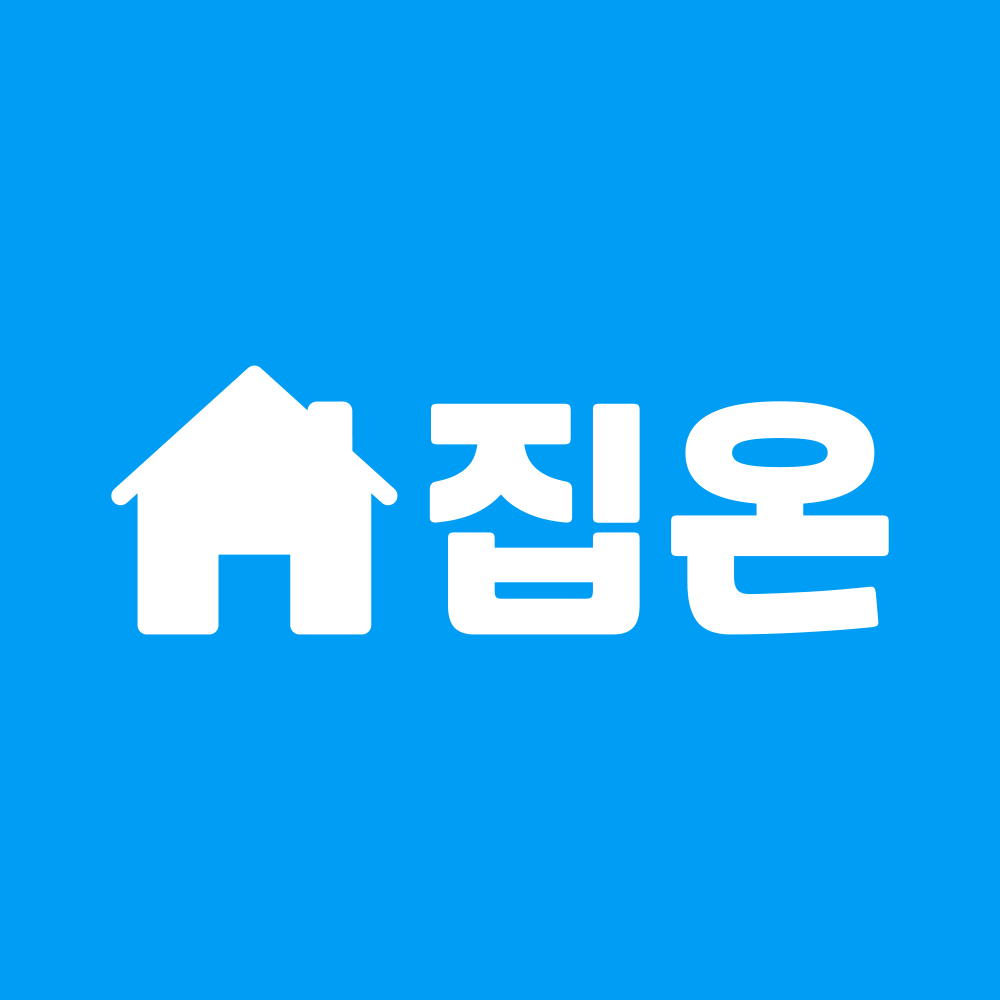

서비스 소개
일상에 활력을 불어넣어 주는 감성적 스마트 홈케어 서비스

“집을 켜다, 삶을 켜다.”
사용자의 일상에 새로운 리듬을 켜주고, 활력을 불어넣어주는 스마트 홈케어 브랜드입니다.
전체 서비스
-
생활 청소
혼자 살수록 미루기 쉬운 집안일을 대신한 맞춤 청소 서비스
-
이사 청소
입주 전부터 퇴거 후까지, 새로운 시작을 위한 꼼꼼한 공간 청소
-
설치 및 수리
혼자서는 어려운 각종 가전, 가구 설치와 수리를 한번에 해결
이용 방법
- 회원가입 및 로그인
- 원하는 서비스를 선택합니다.
- 주소지를 입력해주세요.
- 상세 내용을 입력해주세요.
- 상담 신청을 클릭하면 담당자가 매칭됩니다.